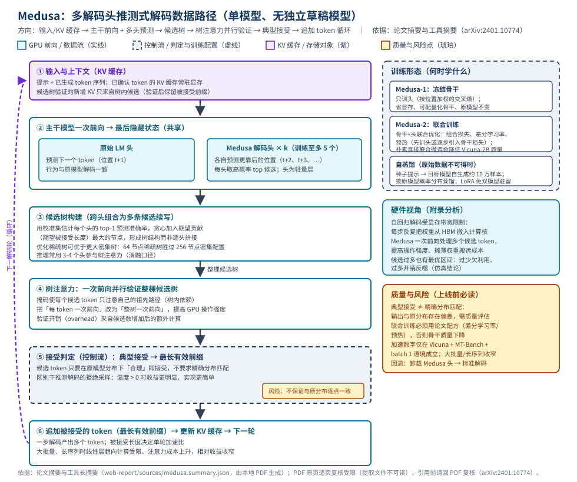

Medusa：多解码头并行预测 + 树注意力验证的推测式解码加速
本页为第 7 篇（解码加速与量化类），定量内容取自本地论文 PDF 07_Medusa_2401.10774.pdf（arXiv:2401.10774）对应的工具长摘要（sources/medusa.summary.json，由该 PDF 生成）并逐条标注论文内定位；因本地提取文件编码不可读且本次无法解析 PDF 原页，页码级核验范围受限（见下方核验说明与 #evidence）。
快速标签与阅读说明
- 生命周期：推理（LLM 解码加速）
- 形态：单模型扩展（附加解码头，无独立草稿模型）
- 目标硬件：GPU 推理实例；论文实验所用 GPU 型号/数量：论文未明确披露 †
- 核心资源：GPU 算力 · 显存带宽（权重搬运）· KV 缓存 · 树注意力算子
- 证据状态：P（摘要级 + 实验级，定位受限）+ R（仓库链接，本次未在线核验）+ E/I
最后核验日期：（核验方式与范围见下条）。
证据完整度与核验范围声明：本页事实来源于 summarize 工具基于本地 PDF 生成的长摘要 sources/medusa.summary.json；本地提取文件 sources/medusa.txt 编码不可读（Read 与文本搜索工具均拒绝），且本次会话无法执行 PDF 解析，故仅「摘要位于第 1 页」属页码级定位，其余定位到论文结构（摘要/实验表/消融/附录）而未标注具体页码。所有「论文未明确披露 †」表示：本次可用证据源未载明该字段、且无法回 PDF 复核——不排除论文正文另有披露，引用前必须回原 PDF 核验。
证据标签图例： P＝论文 R＝仓库 E＝外部资料 I＝编辑推断
1. 摘要与一句话判断
| 题名 | Medusa（框架名）：Simple LLM Inference Acceleration Framework with Multiple Decoding Heads（英文全题未能本次逐字核验；编辑译名：基于多解码头的大模型推理加速框架） |
|---|---|
| arXiv / 本地 PDF | arXiv:2401.10774（2024-01 提交；具体版本与总页数未能本次核验）；本地文件 07_Medusa_2401.10774.pdf P |
| 代码 | 论文明示官方仓库 github.com/FMLYD/Medusa（印于论文摘要脚注，第 1 页）；本次会话未解析 PDF 复核该脚注、也未在线核验可达性，使用前请复核（见 #links）R |
| 评估范围 | Vicuna-7B / Vicuna-13B（ShareGPT 数据训练）；Medusa-2 自蒸馏实验含 Vicuna-33B 与 Zephyr-7B；评测为 MT-Bench 多轮对话生成；实验主要在批量 1（单请求交互）进行 P |
| 实验硬件与精度 | 论文未明确披露 †（GPU 型号/数量与推理精度均未能本次核验） |
3 分钟速读
- 问题：自回归解码每步只产出一个 token，且每步都要把全部权重从高带宽显存搬入计算核，解码受显存带宽限制；推测解码虽能减步，但需要额外训练、对齐、部署与分发一个草稿模型 P（摘要级、附录硬件分析）。
- 方案：在原模型最后隐藏状态上接多个 Medusa 头（训练至多 5 个，推理常用 3-4 个），各头并行预测更靠后的 token 位置；跨头候选组成树，树注意力使整棵候选树可一次前向并行验证；接受判定用典型接受（在原模型分布下合理即可），取最长有效前缀并循环 P（§2 机制层）。
- 论文声称的主要结果：Medusa-1（冻结骨干）加速超过 2.2× 且不损失生成质量；Medusa-2（联合训练）约 2.3×-2.8×；评测口径为 MT-Bench 生成墙钟加速比、批量 1：Vicuna-7B/13B 上 Medusa-1 为 2.18×/2.33×、Medusa-2 为 2.83×（两个模型）；类别级最高为信息抽取 3.62×、代码 3.29×（Vicuna-7B、Medusa-2）P（摘要 + 实验表；完整条件见 #experiments）。
- 扩展：原始训练数据不可得或模型已经过 RLHF 对齐时，用自蒸馏（目标模型自生成约 10 万样本）训练头；Medusa-2 联合训练配合差分学习率与预热配方以避免降低骨干质量；自蒸馏实验（Vicuna-33B、Zephyr-7B）墙钟加速 2.35×-2.83× P（训练与自蒸馏章节 + 实验表）。
- 主要限制：加速数字仅在 Vicuna + MT-Bench + 批量 1 语境成立；大批量/长序列下线性层趋向计算受限、相对收益收窄；典型接受不保证精确分布匹配；朴素直接联合微调会降低 Vicuna-7B 质量 P（消融与讨论）。
2. 问题背景
解码瓶颈的硬件本质：自回归解码每一步只生成一个 token；论文附录的硬件分析指出，该过程受显存带宽限制——每一步都要把完整模型参数从高带宽显存（HBM）搬入加速器缓存，算力没有被喂饱 P（附录硬件分析）。I 对云架构师而言，这意味着批量 1 的交互式推理实例「按算力选型」通常是错配的，瓶颈在带宽与延迟而非 FLOPS。
既有路线与其代价：减少解码步数的既有路线包括 KV 缓存缩减、量化、批处理与推测解码 P（相关工作定位）。其中推测解码用草稿模型起草、原模型验证，可保证分布一致，但需要训练、对齐、serving 与分发一个额外模型，工程与运维成本高 P（摘要级对比）。
目标工作负载与约束：论文实验主要面向批量 1 的本地/交互式使用（多轮对话，MT-Bench 评测）P；约束是：不引入独立草稿模型、尽可能不牺牲生成质量、工程集成简单（头是模型内部的轻量层）P（摘要级主张）。
基线口径：全部加速数字的基线均为「未加速的原模型标准自回归解码」（同一模型逐 token 解码）P（加速比定义口径）；I 因此这些数字回答的是「Medusa 比原模型快多少」，而非「Medusa 与其他加速方案谁更快」。
3. 核心机制
3.1 Medusa 解码头：一份隐藏状态，多个预测位置
在原模型最后隐藏状态上并接多个轻量解码头：原始语言模型头照常预测下一个 token（位置 t+1），每个 Medusa 头负责预测更靠后的位置（t+2、t+3、…），从而单次前向同时得到多个未来位置的预测 P（机制章节）。论文建议训练至多 5 个头；推理时经优化的树注意力常只用其中 3-4 个 P（消融/实现口径）。
3.2 候选树与树注意力：一次前向验证整棵树
- 候选组织为树：各头的 top 候选跨头组合成多条候选续写，结构上组织为一棵候选树，而非逐头独立成句 P。
- 树注意力：验证时施加注意力掩码，使每个候选 token 只注意自己的祖先路径；整棵候选树可在一次前向中并行处理，被验证的是「每条候选续写的整体」P。
- 树的构建：在校准数据集上估计每个头 top-1 预测的准确率，按「对期望被接受长度的贡献」贪心地加入节点 P（消融章节）。I 这是把「候选数量」从拍脑袋参数变成可校准指标的关键设计。
- 稀疏优于密集：密集树候选多、被接受 token 率升高，但验证计算开销随之增加；按准确率优化的稀疏树可以胜过更大的密集树——64 节点稀疏树优于 256 节点密集配置 P（消融）。
3.3 两种训练模式与自蒸馏
| 形态 | 训练方式 | 论文口径的质量与成本 | 适用取舍（I） |
|---|---|---|---|
| Medusa-1 | 冻结骨干，仅训练附加头；对多个未来位置使用加权交叉熵损失 | 不降低原模型质量（超过 2.2× 加速且质量不降）；显存高效，可配合量化骨干 | 原模型必须逐字保留时首选；加速上限低于 Medusa-2 |
| Medusa-2 | 骨干与头联合训练：骨干+头组合损失、差分学习率、预热流程（先训头，或骨干损失权重逐步引入） | 头准确率更高、加速更高（约 2.3×-2.8×）；但朴素直接联合微调会降低 Vicuna-7B 质量，必须用配方 | 允许微调骨干且追求加速上限时选用；需完整质量回归 |
| 自蒸馏（两者通用） | 原始训练数据不可得或模型经 RLHF 对齐时：以种子提示让目标模型自生成数据集（约 10 万样本，种子取自 ShareGPT 或 UltraChat）；Medusa-2 场景再按原模型概率预测做蒸馏，使联合训练不损质量 | 使头匹配目标模型自身分布；LoRA 适配器使该流程无需在显存中同时驻留两个完整模型 | 商用闭源对齐模型、无原始预训练数据时的唯一路线；需承担生成 10 万样本的一次性成本 |
3.4 典型接受：替代拒绝采样的接受判定
推测解码经典验证采用拒绝采样，要求草稿与目标分布精确匹配才能保持输出分布严格一致。Medusa 提出典型接受作为替代：候选 token 只要在原模型分布下「合理（plausible）」即被接受，不要求精确分布匹配；这简化了实现并在采样温度非零时仍保持相近输出质量与速度收益 P（典型接受章节）。
4. GPU/系统数据路径

端到端文字序列（与图中编号一致）
- ① 输入与上下文：提示与已生成 token 构成当前序列；已确认 token 的 KV 缓存驻留显存。候选树验证产生的新 KV 只来自树内候选，验证完成后仅保留被接受前缀对应的 KV P（机制口径）+ I（KV 生命周期整理）。
- ② 主干前向 + 多头预测：主干模型一次前向得到最后隐藏状态；原始 LM 头据此预测 t+1，每个 Medusa 头并行预测更靠后的位置（训练至多 5 头、推理常用 3-4 头），各头取高概率候选 P。
- ③ 候选树构建：跨头候选组合为候选树；建树用校准集估计的各头 top-1 准确率，按期望被接受长度贡献贪心加节点；优化稀疏树可优于密集树（64 节点稀疏 > 256 节点密集）P。
- ④ 树注意力并行验证：整棵候选树经注意力掩码（候选只看祖先）在一次前向中并行验证；把「每 token 一次前向」改为「整树一次前向」，提高操作强度；验证开销随候选数增加 P。
- ⑤ 接受判定：典型接受——候选只要在原模型分布下合理即接受（不要求精确分布匹配），从树中取最长有效前缀 P。
- ⑥ 追加与循环：被接受的多个 token 一次追加进序列并更新 KV 缓存，进入下一轮解码；单轮产出 token 数（被接受长度）决定加速比；大批量/长序列时相对收益收窄 P + I（循环整理）。
| 事实/数值 | 对象与条件 | 论文定位 |
|---|---|---|
| 训练至多 5 个解码头；推理常用 3-4 个头参与树注意力 | 头数量配置 | P 训练章节与消融（页码未能核验） |
| 稀疏 64 节点候选树优于 256 节点密集树 | 树结构消融（候选规模权衡） | P 消融章节（页码未能核验） |
| 建树依据：校准集估计各头 top-1 准确率 × 期望被接受长度，贪心加节点 | 树构建算法 | P 消融章节（页码未能核验） |
| 自蒸馏数据集约 10 万样本；种子取自 ShareGPT 或 UltraChat；LoRA 适配器避免双模型驻留 | 自蒸馏训练（Vicuna-33B、Zephyr-7B 实验所用） | P 自蒸馏章节（页码未能核验） |
| 无独立草稿模型：头在原模型内部，草稿与验证同栈完成 | 与推测解码的结构差异 | P 摘要（第 1 页） |
| 实验硬件型号/数量、推理精度：论文未明确披露 † | 数据路径运行环境 | P（本次证据源未载明） |
5. 架构权衡
-
步数减少 ↔ 验证开销（树规模）
P 候选树越大，被接受 token 率越高，但验证计算开销随之增加；候选数量存在最优区间——过少欠利用性能、过多开销反噬并最终降低加速 P（消融与仿真）。I 运维含义：树结构是部署后仍需持续调优的旋钮，应按业务负载校准而非照搬论文配置。
-
无草稿模型 ↔ 必须训练头/适配
P 相比推测解码，Medusa 免去草稿模型的训练、对齐、serving 与分发 P；但代价是必须为每个目标模型训练解码头（Medusa-1/2/自蒸馏三选一），模型每升级一次就要重训 I。这是「一次性训练成本」与「长期双模型运维成本」的交换。
-
速度 ↔ 质量/分布一致性
P Medusa-1 保持原模型不变但加速较低；Medusa-2 加速更高但需配方防降质（朴素联合微调会降低 Vicuna-7B 质量）；典型接受换取速度但放弃精确分布匹配 P。I 三档选择本质是同一根轴：离原模型分布多近，就牺牲多少速度。
-
数据可得性 ↔ 自蒸馏成本
P 原始训练数据不可得或经 RLHF 对齐时，自蒸馏（目标模型自生成约 10 万样本 + 概率蒸馏）仍可训练头，且 LoRA 使其不必双模型驻留 P。I 代价是一次性的大规模生成推理成本与蒸馏质量依赖种子提示的代表性。
-
批量 1 收益 ↔ 大批量/长序列衰减
P 解码的收益来自显存带宽瓶颈下的操作强度提升；大批量、长序列使线性层趋向计算受限、注意力成本上升，Medusa 相对收益收窄 P（附录分析）。I 容量规划必须按「目标并发区间」重新实测，不能把批量 1 的加速比外推到高并发吞吐场景。
-
工程集成简单 ↔ 服务栈定制深度
P 头位于模型内部、无需独立草稿模型，集成面小 P。I 但树注意力算子、建树校准与接受逻辑都在推理框架的关键路径上，采用即意味着对推理栈的这些环节负责（版本、性能回归、监控），并非「零侵入」。
6. 云上部署映射
以下映射为厂商中立示例；具体产品命名/规格仅作说明并标 E，以厂商当时目录为准，未逐一在线核验。论文事实单独标注 P。
| 论文需求 | 云上映射（示例） | 证据与说明 |
|---|---|---|
| 计算：批量 1 交互式解码，受显存带宽限制（附录分析） | E 单卡推理实例即可承载 7B-33B 级模型（如各云 A10G/L4/A100 类实例；型号与显存按模型规模选择） | 带宽受限机理为论文事实 P（附录）；实例规格为厂商目录示例 E；论文实验硬件论文未明确披露 † |
| 服务形态：单模型 + 附加头；典型接受判定在采样路径上 | E 模型服务（自建 vLLM/TGI 类框架或云托管模型服务）承载「主干+头」打包产物；采样温度等参数随请求下发 | 单模型形态为论文事实 P；论文未绑定任何服务框架 P；框架选型为云实践 E/I |
| 存储：主干权重 + Medusa 头/LoRA 适配器；无独立草稿模型制品 | E 模型制品库（对象存储/模型 registry）：权重与头版本配对存储、按 digest 拉取；KV 缓存驻留实例内存，无需外置 | 制品结构为论文机制 P（头是模型内部层、LoRA 免双模型）；制品管理为云实践 E |
| 编排：头与主干的版本配对、发布与灰度 | E 推理服务发布流水线：模型制品版本 pin → 金丝雀实例 → 质量回归（MT-Bench 类评测）→ 全量 | 论文未涉及发布流程 P（超出论文范畴）；灰度与质量回归为工程建议 I |
| 弹性：并发区间决定收益；卸载头可回退标准解码 | E 按并发/延迟 SLO 水平扩缩实例；「开关 Medusa 头」作为运行时降级开关（低并发开、高并发关） | 大批量收益收窄为论文事实 P；回退开关的工程可行性源自「头是附加层」的机制 P + I |
| 可观测：被接受长度、验证开销、输出质量 | E 接入监控（每步被接受 token 数、每步墙钟时长、TPOT、质量抽评分数）；异常时回退标准解码并告警 | 论文以 MT-Bench 与加速比作为评测口径 P；监控指标设计为编辑建议 I、接入为云实践 E |
7. 成本 / 性能 / SLO
7.1 推理场景的 SLO 口径
I 交互式推理平台通常约束：①TTFT（首 token 延迟）；②TPOT（每 token 延迟/步时长）；③单请求吞吐（tokens/s）；④质量底线（MT-Bench 类评测分数或人工抽评通过率）。Medusa 直接作用于 ②③（一步多 token），对 ① 影响论文未明确披露 †；④ 必须自行设定阈值——论文口径是「质量变化小/不降质」，其评测集（MT-Bench）与业务分布未必一致 P（评测口径）+ I（SLO 框架）。
7.2 成本公式（参数化，编辑推断）
单实例每小时产出 ≈ 并发请求数 × 每请求 tokens/s × 3600
每百万 token 成本 ≈ 实例时单价 ÷ 单实例每小时产出（记录单价查询日期）
启用 Medusa 的成本收益 ≈ 1 −（关头单请求墙钟 ÷ 开头单请求墙钟）×（开头与关头等质量的置信度折扣）
I 公式中可由论文参考的变量只有「每步被接受 token 数」带来的加速倍数（带完整条件，见 #experiments）；其余（单价、并发、输出长度分布、质量置信度）均需按部署实测填写，论文未披露、本页不给出伪精确数字。
7.3 敏感项排序（论文口径，条件互不可比）
P 在各自条件下：任务类别差异最大（Vicuna-7B/Medusa-2：信息抽取 3.62×、代码 3.29×，高于整体 2.83×）＞训练方式差异（Medusa-1 2.18×/2.33× vs Medusa-2 2.83×）＞树结构差异（稀疏 64 优于密集 256）P。I 成本治理含义：先用类别级实测确定「哪些业务路由值得开头」，再定树结构；不同任务/训练方式/树结构的倍数不可相乘或横向比较。
7.4 数据缺口
- 论文实验硬件（GPU 型号/数量）与推理精度：P 论文未明确披露 †——加速比无法换算为绝对时延或成本。
- 输入/输出长度分布、温度设置、批量 1 之外的实测曲线：P 论文未明确披露 †（大批量衰减仅有定性结论）。
- 云价格、能耗、树构建校准的一次性成本：I 论文未涉及，需部署时自测。
8. 安全与可运维性
8.1 安全
- 模型资产保护：I 「主干 + 头/LoRA 适配器」整体是模型 IP，制品库需按项目隔离、最小权限、静态加密与下载审计（云存储侧能力，E）。自蒸馏用的约 10 万条生成样本同样属敏感资产（可能含训练语料分布信息），访问要与权重同级管控 P（自蒸馏机制）+ I。
- 供应链：R 代码与训练权重来自论文明示仓库（#links）；I 引入时应按 digest/commit pin、扫描镜像与依赖、保留可回退版本。注意：本页对该仓库未做在线核验，接入前先人工复核归属与许可。
- 多租户与缓存残留：I KV 缓存驻留实例显存，实例在租户/会话间复用前必须重置，避免跨会话信息残留（通用推理服务要求，非 Medusa 特有）。
- 输出风险：P 论文明确 Medusa 继承底层模型的伦理、公平性、可解释性与误用风险；典型接受还引入与原分布的偏差 P。I 合规审查应以「Medusa 实际输出」为对象，而非以原模型报告代替。
8.2 可运维性（含恢复与回滚）
- 天然回退路径：I 头是附加层——服务异常或质量回退时，可运行时卸载 Medusa 头、退回标准自回归解码（基线即回退态）。这是相对「独立草稿模型」方案的重要运维优势：回退不引入新部署物，只是关闭特性 P（机制推论）。
- 故障恢复：I 推理服务无训练态，故障恢复 = 实例重启 + 权重/头制品重新加载；检查点即模型制品本身。多实例无状态水平扩展，单实例故障由负载均衡摘除（云编排能力，E）。
- 监控告警：I 建议告警项：每步被接受 token 数的分布漂移（树/头失配信号）、TPOT 相对基线的变化、质量抽评分跌破阈值、验证开销占比异常上升。
- 升级与回滚：I 主干与头版本必须配对 pin；升级走金丝雀 + 质量回归（MT-Bench 类评测 + 业务抽样），回滚 = 回退到「上一配对版本」或直接关头。模型升级（换骨干）必须重训头，发布计划要包含重训与再评测周期 P（头与模型绑定）+ I。
- 验收基线：I 上线前固定两组读数：关头（标准解码）与开头，各测吞吐/TPOT/质量，形成可复核的差值基线；此后任何变更以差值回归验收。
9. 适用 / 不适用场景
适用（触发条件 + 理由）
- 批量 1 的交互式对话/Agent 单请求解码。触发：用户直接对话、单请求流式输出，延迟由逐 token 解码主导。理由：论文实验主口径即批量 1 + MT-Bench，加速 2.18×-2.83×（Vicuna 7B/13B）P（实验表）。
- 不能接受独立草稿模型运维成本的团队。触发：想获得推测式加速、但不愿训练/对齐/分发/服务第二个模型。理由：Medusa 单模型内完成草稿与验证，头是轻量内部层 P（摘要级主张）。
- 原模型必须逐字保留（Medusa-1）。触发：模型已对齐/已审计、不允许动骨干权重。理由：Medusa-1 冻结骨干只训头，质量不降、可配量化骨干 P（训练章节）。
- 无原始训练数据的闭源/对齐模型（自蒸馏）。触发：只有模型 API/权重、无预训练语料。理由：自蒸馏用目标模型自生成约 10 万样本即可训头，LoRA 免双模型驻留；Vicuna-33B/Zephyr-7B 上墙钟加速 2.35×-2.83× P（自蒸馏章节与实验表）。
- 解码占比高的代码/信息抽取类负载。触发：输出长、结构规整、头部预测命中率高的任务。理由：类别级加速更高（抽取 3.62×、代码 3.29×，Vicuna-7B/Medusa-2）P（实验表）。
不适用（触发条件 + 理由）
- 高并发大批量吞吐场景为主。触发：持续批处理服务、批量越大越省成本的运营模式。理由：大批量下线性层趋向计算受限、注意力成本上升，Medusa 相对收益收窄 P（附录分析）。
- 要求输出分布与原模型严格一致。触发：审计/合规要求「与基线模型输出同分布」。理由：典型接受只要求「合理」而非精确分布匹配 P；要严格一致需回到拒绝采样式方案 I。
- 完全不能训练/改动模型的部署。触发：只拿现成权重做零改动推理，且无自蒸馏预算。理由：无论 Medusa-1/2 都要训练头，自蒸馏也需生成约 10 万样本的一次性推理成本 P。
- 超长上下文主导的负载。触发：输入序列极长、注意力计算占比高。理由：注意力成本随序列上升会压缩 Medusa 相对收益 P（长序列衰减结论）。
- 期望零调优即得论文加速比。触发：直接照搬论文头数/树结构上线。理由：树规模存在最优区间且需按负载校准（稀疏 64 优于密集 256 的结论依赖按准确率建树）P；加速数字仅限 Vicuna + MT-Bench + 批量 1 语境 P。
10. 实验与指标
10.1 实验设置与口径 P
| 硬件 | 论文未明确披露 †（GPU 型号/数量/互联均未载明于本次证据源） |
|---|---|
| 精度 | 论文未明确披露 † |
| 模型与规模 | Vicuna-7B、Vicuna-13B（ShareGPT 数据训练）；自蒸馏实验另含 Vicuna-33B、Zephyr-7B P |
| 批量/并发 | 实验主要在批量 1（单请求/交互式）进行 P；批量 1 之外的实测：论文未明确披露 † |
| 输入/输出长度 | 评测集为 MT-Bench 多轮对话生成 P；具体输入/输出长度与温度设置：论文未明确披露 † |
| 指标定义 | 「加速/speedup」＝相对基线的 MT-Bench 生成墙钟时间加速比 P；自蒸馏表另报告「加速率（acceleration rate）」与「开销（overhead）」，两者精确定义未能核验 † |
| 基线 | 同一模型（Vicuna）未加速的标准自回归解码 P |
| 训练数据 | 主实验：ShareGPT；自蒸馏：种子取自 ShareGPT 或 UltraChat，约 10 万条生成样本 P |
10.2 论文实验结果（全量转录，条件逐条完整）
下表合并摘要级与实验级数字；所有加速比的基线均为同模型标准自回归解码，评测均为 MT-Bench 生成（批量 1）。不同行之间不可横向比较或相乘。
| 条目 | 模型 / 训练形态 | 加速比（墙钟，MT-Bench，批量 1） | 其他条件 |
|---|---|---|---|
| 摘要级结论 | 通用口径：Medusa-1（冻结骨干） | >2.2× | 声称不损失生成质量；硬件/精度 论文未明确披露 † |
| 摘要级结论 | 通用口径：Medusa-2（联合训练） | 约 2.3×-2.8× | 需防降质配方；硬件/精度 论文未明确披露 † |
| 主实验 | Vicuna-7B / Medusa-1 | 2.18× | 批量 1；MT-Bench；基线＝标准解码；质量不降（论文口径） |
| 主实验 | Vicuna-13B / Medusa-1 | 2.33× | 同上 |
| 主实验 | Vicuna-7B / Medusa-2 | 2.83× | 同上；联合训练用论文配方 |
| 主实验 | Vicuna-13B / Medusa-2 | 2.83× | 同上 |
| 类别级 | Vicuna-7B / Medusa-2：信息抽取 | 3.62× | 类别级最高值，非整体加速；批量 1；MT-Bench |
| 类别级 | Vicuna-7B / Medusa-2：代码 | 3.29× | 同上 |
| 自蒸馏实验 | Vicuna-33B、Zephyr-7B / Medusa-2 + 自蒸馏 | 2.35×-2.83×（墙钟） | 约 10 万条自生成样本（ShareGPT/UltraChat 种子）；质量变化小（论文口径） |
| 自蒸馏实验（表内并列口径） | 同上 | 加速率 3.01-3.51；开销 1.18-1.27 | 两项指标的精确定义未能核验 †，不能与墙钟加速混用 |
10.3 消融与分析（论文口径）
- 树结构：树注意力重要但需谨慎配置；密集树提升被接受 token 率但增加验证开销；按准确率优化的稀疏树胜过更大密集树（64 节点 > 256 节点密集）P（消融）。
- 训练方式：朴素直接联合微调降低 Vicuna-7B 质量；Medusa-1 保持质量；Medusa-2 配方（组合损失/差分学习率/预热）在提速同时保持质量 P（消融）。
- 候选数量仿真：候选 token 存在最优区间——过少欠利用、过多开销反噬并最终降低加速 P（附录仿真）。
- 负载敏感性：更大批量、更长序列会收窄相对收益（线性层趋向计算受限、注意力成本上升）P。
| 实验 | 硬件 | 精度 | 批量/并发 | IO（输入/输出） | 基线 | 定位 |
|---|---|---|---|---|---|---|
| 主实验（Medusa-1/2 加速） | 论文未明确披露 † | 论文未明确披露 † | 批量 1 | MT-Bench 多轮对话；长度 论文未明确披露 † | 同模型标准自回归解码 | P 实验表（表号/页码未能核验 †） |
| 类别级加速（抽取/代码） | 论文未明确披露 † | 论文未明确披露 † | 批量 1 | MT-Bench 对应类别子集 P；长度 论文未明确披露 † | 同上 | P 实验表（表号/页码未能核验 †） |
| 自蒸馏实验（33B/Zephyr） | 论文未明确披露 † | 论文未明确披露 † | 批量 1（推断） | MT-Bench；生成样本约 10 万条（训练侧） | 同上 | P 自蒸馏实验表（表号/页码未能核验 †） |
| 树结构消融（64 vs 256） | 论文未明确披露 † | 论文未明确披露 † | 论文未明确披露 † | 论文未明确披露 † | 表内密集/稀疏配置互比 | P 消融章节（页码未能核验） |
10.4 建议复现步骤（编辑推断）
- I 回原 PDF 复核本页全部数字的表号/页码与实验硬件（本次未能完成的一步）。
- I 从论文明示仓库取代码与训练好的头（确认归属与许可后 pin commit/digest）。
- I 固定硬件与精度口径，先测关头基线：MT-Bench 同集、批量 1，记录吞吐/TPOT/质量分。
- I 开头复测同负载；再扫树规模（含稀疏/密集各一组）找到自身负载的最优区间。
- I 在目标并发区间（不只批量 1）重复差值测量，确定启用的流量路由范围。
- I 训练自己的头时：有数据走 Medusa-1/2 配方，无数据走自蒸馏；两种情况都做质量回归后再上线。
11. 论文 / 代码 / 延伸链接
| 来源 | 链接 / 文件 | 级别与核验 |
|---|---|---|
| 论文（arXiv abstract） | https://arxiv.org/abs/2401.10774 | P arXiv:2401.10774（2024-01 提交；具体版本本次未核验）；本地 PDF：07_Medusa_2401.10774.pdf（总页数未能本次核验；本次会话未能逐页复核，见 #evidence） |
| 官方代码仓库 | https://github.com/FMLYD/Medusa | R 论文明示（摘要脚注，第 1 页）。核验状态：本次会话既未解析 PDF 逐字复核该脚注、也未在线访问该 URL；「FMLYD/Medusa 为论文明示官方仓库」来自站外通识与论文记录，使用前必须人工复核归属、活跃度与许可。若复核不符，应按「未核验到官方仓库」处理，不得沿用本链接。 |
| 其他仓库 | 不提供 | I 遵循本站「不猜测仓库」策略：论文摘要未明示且未经核验的第三方/镜像/集成仓库一律不链接。 |
12. 给架构师的决策清单
I 以下为落地前的勾选项；标注（P）的条目对应论文证据，（R）对应仓库核验项，其余为工程判断。
-
需求与规模
-
兼容性
-
PoC（1-2 周量级）
-
容量
-
SLO 与恢复
-
成本
-
安全
-
运维与回滚
-
退出策略
13. 证据台账
下表为核心结论的证据映射；逐条引文与核验记录见构建文件 sources/medusa.evidence.json。核验日期为 。
sources/medusa.txt 编码不可读（工具拒绝解析）、且本次会话不能执行 PDF 解析，故事实来源为 summarize 工具基于该 PDF 生成的长摘要（sources/medusa.summary.json）。摘要属「二次提取物」，按本站规则不能单独作为事实来源——因此本页所有数字均标注「引用前必须回 PDF 复核」，页码级定位仅完成「摘要在第 1 页」一项。重跑 summarize --extract 恢复可读提取后，应补做逐页核验并更新本台账。
| 关键结论 | 级别 | 定位 | 核验状态 |
|---|---|---|---|
框架名 Medusa；arXiv:2401.10774；本地 PDF 07_Medusa_2401.10774.pdf | P | 论文题名块（第 1 页）；arXiv 号另见文件名 | 部分核验（摘要内容已核；英文全题/作者/机构未能逐字核验） |
| 机制：附加解码头并行预测多个后续 token；无独立草稿模型 | P | 摘要（第 1 页）+ 机制章节 | 已核验（工具摘要）；页码复核待补 |
| 解码受显存带宽限制；每步搬运全部权重；Medusa 提高操作强度 | P | 附录硬件分析 | 已核验（工具摘要）；页码复核待补 |
| 树注意力：候选只看祖先，整树一次前向验证；取最长有效前缀 | P | 机制章节 | 已核验（工具摘要）；页码复核待补 |
| Medusa-1：冻结骨干、加权交叉熵、省显存、可配量化骨干、质量不降、>2.2× | P | 摘要（第 1 页）+ 训练章节；2.18×/2.33× 见实验表 | 已核验（工具摘要）；表号/页码复核待补 |
| Medusa-2：联合训练（组合损失/差分学习率/预热）；约 2.3×-2.8×，实测 2.83×（7B/13B）；朴素联合微调降质 | P | 摘要（第 1 页）+ 训练章节 + 消融 | 已核验（工具摘要）；表号/页码复核待补 |
| 自蒸馏：目标模型自生成约 10 万样本（ShareGPT/UltraChat 种子）；概率蒸馏 + LoRA；33B/Zephyr 墙钟 2.35×-2.83×、加速率 3.01-3.51、开销 1.18-1.27 | P | 自蒸馏章节 + 实验表 | 已核验（工具摘要）；指标定义与表号复核待补 |
| 典型接受：原模型分布下合理即接受，非精确分布匹配；温度>0 时有效 | P | 典型接受章节 | 已核验（工具摘要）；页码复核待补 |
| 类别级加速：抽取 3.62×、代码 3.29×（Vicuna-7B/Medusa-2） | P | 实验表（类别级结果） | 已核验（工具摘要）；表号/页码复核待补 |
| 树结构消融：稀疏 64 节点 > 密集 256 节点；建树按校准 top-1 准确率贪心 | P | 消融章节 | 已核验（工具摘要）；页码复核待补 |
| 训练至多 5 头；推理常用 3-4 头；候选数量有最优区间（仿真） | P | 训练/消融/附录仿真 | 已核验（工具摘要）；页码复核待补 |
| 大批量/长序列收窄相对收益（计算受限转向） | P | 实验讨论/附录分析 | 已核验（工具摘要）；页码复核待补 |
官方仓库 github.com/FMLYD/Medusa | R | 论文摘要脚注（第 1 页） | 未复核（本次未解析 PDF 复核脚注原文、未在线访问；使用前必须人工核验） |
| 云实例/服务/存储/监控映射示例 | E | 各云厂商公开目录与推理服务文档 | 未逐一在线核验；使用前按当时目录复核 |
| 成本公式、SLO/监控/回滚/清单等工程建议；控制面-数据面划分 | I | 本报告 §6-§9、§12 | 编辑标注完成；不含伪精确数字 |